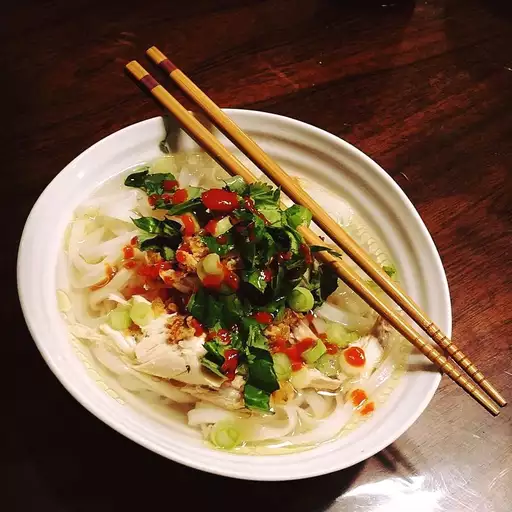

Pho Recipe
This is one of my favorite soups!!! I love going to Vietnamese restaurants, but since I came up with this soup, we stay in!!!

Finished product of our pho recipe!
This pho recipe is a classic Vietnamese dish that is perfect for any occasion.
It features a flavorful broth, rice noodles, and tender chicken that are cooked to perfection. Serve with a side of fresh herbs, bean sprouts, and lime wedges for a complete meal.
Prep Time: 10 mins
Cook Time: 30 mins
Total Time: 40 mins
Servings: 2
Yield: 6 cups pho
Ingredients:
-
4 ounces dry Chinese egg noodles
-
6 cups chicken stock
-
2 tablespoons fish sauce
-
4 cloves garlic, minced
-
2 teaspoons minced fresh ginger root
-
1 tablespoon minced lemon grass
-
5 green onions, chopped
-
2 cups cubed cooked chicken
-
1 cup bean sprouts
-
1 cup chopped bok choy
Steps:
-
Bring a large saucepan of water to a boil over high heat. Add noodles and return water to boil. Boil until soft, about 8 minutes. Drain and reserve noodles.
-
Bring chicken stock, fish sauce, garlic, ginger, lemon grass, and green onions to a boil in a large pot. Reduce to a simmer; cook for 10 minutes. Stir in the chicken, bean sprouts, and bok choy. Cook pho until heated through, about 5 minutes.
-
Divide the cooked noodles between 2 large bowls. Pour pho over noodles; serve immediately.
Nutrition Facts
- Calories: 521
- Fat: 14g
- Carbs: 54g
- Protein: 50g
- Sodium: 3270mg
- Cholesterol: 107mg
- Dietary Fiber: 10g
Return to home page
Back to top